Teil 1 – Was ist Linguistik?
Lernen Linguisten viele Sprachen?
Linguistik
lingua (Lat. „Sprache“)
vgl. auch bilingual („zweisprachig“)
Linguistik = Sprachwissenschaft
Und lernen Linguisten nun viele Sprachen?
Klare Antwort: Nein!
Was ist Linguistik?
Der Gegenstand der Linguistik ist das Wesen und der Gebrauch aller natürlichen Sprachen.
Was ist eine natürliche Sprache?
Eine natürliche Sprache ist eine Sprache, die von Kindern in ihrer vorgefundenen Umgebung ohne explizite Unterweisung gelernt wird.
Was ist Sprache?
Warum interessiert und fasziniert uns Sprache?
Nur der Mensch verfügt über dieses Mittel der Kommunikation.
Haben Tiere auch Sprachen?
- Bienentänze
- Starengesänge
- Wahlgesänge

Eigenschaften natürlicher Sprachen
- kreativ
- linear und hierarchisch strukturiert (z.B. Stadttorwächter)
- rekursiv (z.B. Stadttorwächterhaus, Stadttorwächterhaustür)
- historisch veränderbar und situativ angepasst (frouwe → Frau)
Zielsetzungen
Das Reden über Sprache kann unterschiedliche Zielsetzungen haben:
|


|
Linguistik als Wissenschaft
Linguistik versteht sich – wie eine Naturwissenschaft – als empirische Wissenschaft, die auf Datenbeobachtung fußt.
Was ist Sprachwissenschaft?
- Sprachwissenschaft (oder Linguistik) ist das Studium natürlicher Sprache.
- Grammatik/Sprache ist regelgeleitete, strukturbezogene Laut-Bedeutungszuordnung.
- Die Linguistik beschreibt diese Einheiten und Regeln und sucht nach Erklärungen.
Teilgebiete der Linguistik
- Semantik
- Pragmatik
- Phonologie
- Morphologie
- Syntax
Semantik
Die Semantik ist die Bedeutungslehre.
Es geht um wörtliche Bedeutung – Bedeutung für sich genommen.
Semantik bei Sätzen
Ihr lernt Sätze nicht auswendig.
Es gibt Regeln, die es uns erlauben, die Bedeutung eines Satzes systematisch zu bilden.
Pragmatik
Es geht um den handfesten Gebrauch von Sprache.
Bedeutung im gegebenen Kontext.
Sprechakte
Welche Handlungen vollziehen wir mit Sprache?
„Hiermit erkläre ich Sie zu Eheleuten“
Kooperationsprinzip
Wir fassen uns gegenseitig als kooperativ auf.
Phonologie
System der Laute in einer Sprache
Phoneme: bedeutungsunterscheidende Laute
Bett – nett
rot – Rat
Phonotaktik
Welche Lautfolgen sind möglich?
Lgimpf – Splute – Rtamma
Morphologie
In der Morphologie geht es um Wörter.
- Wortbildung: Bildung von Wörtern auf Basis von Wörtern
- Flexion: Bildung von Wortformen
Syntax
Wie werden Wörter zu Wortgruppen und Wortgruppen zu Sätzen zusammengefügt?
- linear: Wortstellung
- hierarchisch: Konstituenten („Schachtel-in-Schachtel-Struktur“)
Psycholinguistisches Schülerlabor
Universität Tübingen
Fabian Schlotterbeck
Lorenz Quast
Mengjie Guo
Teil 1: Linguistik?
Module der Sprachforschung
Semantik
Pragmatik
Phonologie
Morphologie
Syntax
Semantik
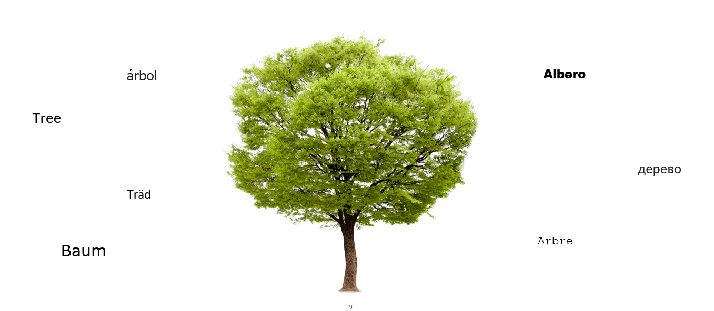
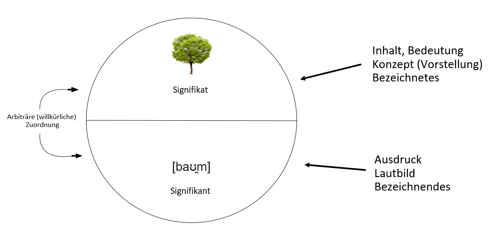
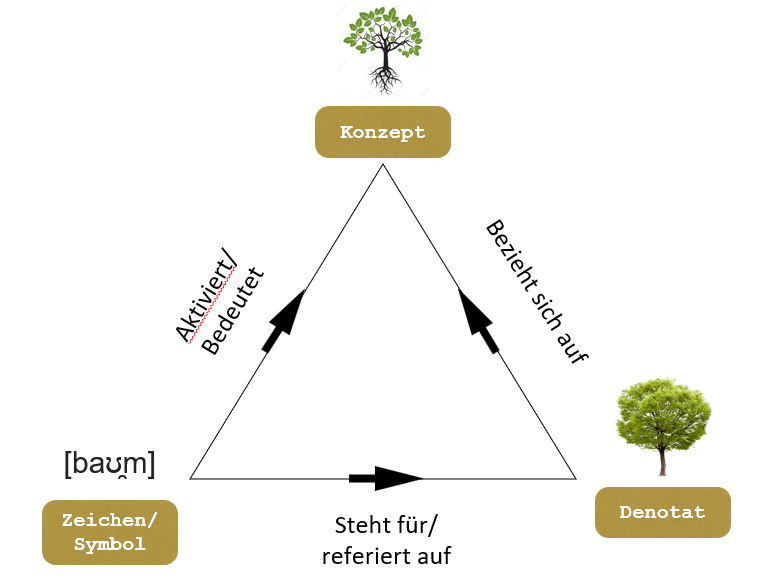
Semantik als Bedeutungslehre
Die Semantik ist die Wissenschhaft von der Bedeutung einfacher und komplexer sprachlicher Ausdrücke für sich genommen. Sie befasst sich außerdem mit den Schnittstellen der Ausdrucksbedeutung zu den Ebenen der Äußerungsbedeutung und des kommunikativen Sinns.
Arbiträre Zuordnung von Zeichen zu Konzept: wauwau, kikeriki, knallen, klirren, rauschen ?
Inhaltswörter vs. Funktionswörter: Sie isst die Pizza. -> Bedeutung von sie, die?
Wortbedeutung - Satzbedeutung - Kompositionalität: Wie viele Sätze gibt es in einer Sprache? Unendlich viele?
Pragmatik
Pragmatik als Konversationslehre
Pragmatik untersucht das System, das bestimmt, was in einem gegebenen Kontext ein Satz bedeuten kann und nicht kann.
Untersucht den kontextabhängigen kommunikativen Sinn.
Sprechakttheorie
"Ich werde dir helfen."
"Tut mir leid."
"Ich bin dabei zu kochen."
"Hiermit erkläre ich Sie zu Eheleuten."
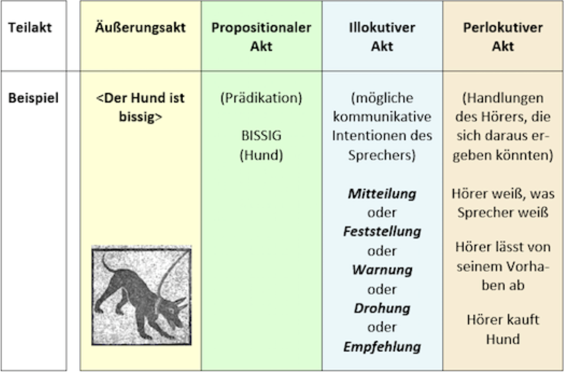
Konversationsmaxime
Umfasst keine Regeln, sondern Erwartungshaltungen, die als Grundlage der Interpretation dienen.
1. Qualitätsmaxime: Sage nichts, was du für falsch hälst.
2. Quantitätsmaxime: Gestalte deinen Beitrag so informativ wie nötig, aber nicht informativer als nötig.
3. Relevanzmaxime: Mache deine Beiträge relevant.
4. Maxime der Art und Weise: Sei klar.
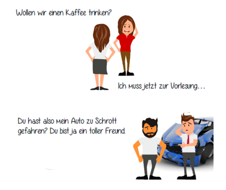
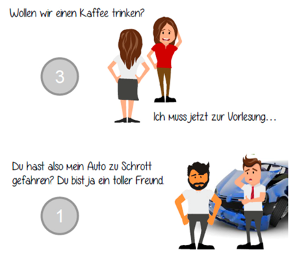
Phonologie
Phonologie als Lautlehre
Phonologie untersucht das System, das bestimmt, welche Lautstrukturen/Lautsequenzen möglich und welche unmöglich sind.
Lgimf
Splute
Rtamma

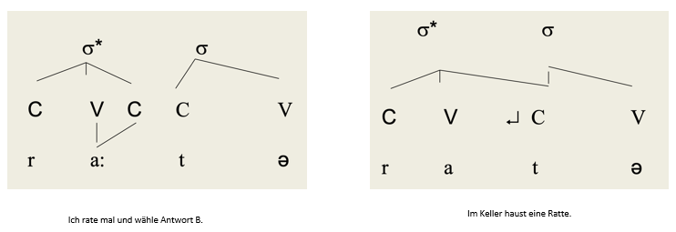
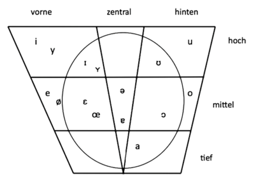
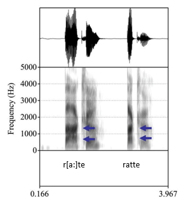
Morphologie
Morphologie untersucht das kognitive Regelwerk, das mögliche von unmöglichen Wortkombinationen unterscheidet.
*der grünenTraktor
*Wir isst.
*Die drei Könige brachten Gabungen.
*Die Pizza war äußerst kostbar.
Sparsam, Sparsamkeit, aber *Sparkeit
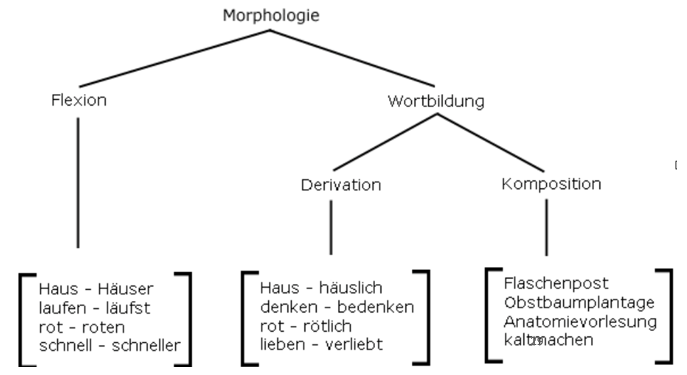
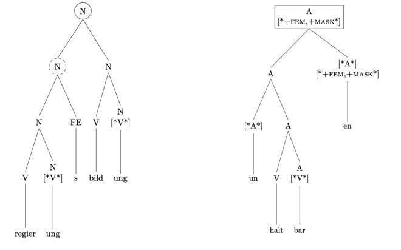
Syntax
Syntax untersucht das System, das bestimmt, wie Wörter zu Wortgruppen bzw. Wortgruppen zu Sätzen zusammengefügt werden können.
Nominalphrase: Der grüne Traktor/ Der große, grüne Traktor/ Der Traktor, der grün ist / *Grüne der Traktor
Mittelfeldvariation:
Lisa schickt morgen das Paket an Hans nach Lüneburg. Lisa schickt das Paket morgen an Hans nach Lüneburg. Lisa schickt morgen nach Lüneburg das Paket an Hans.
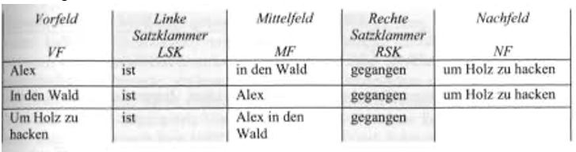
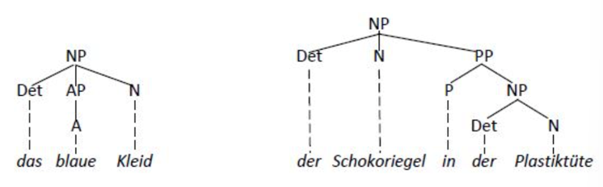
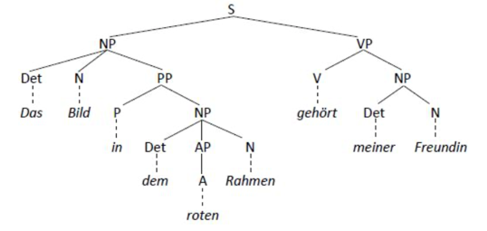
Teil 2: Psycholinguistik?
Psycholinguistics is...
the scientific discipline that studies how people acquire a language and how they comprehend and produce this language. (Kalbunde, 2001)
the discipline that investigates and describes the psychological processes that make it possible for humans to master and use language. (Ratner & Gleason, 2004)
mainly concerned with the mechanisms by which language is processed and represented in the mind and brain; that is, the psychological and neurobiological factors that enable humans to acquire, use, comprehend, and produce language. (Wikipedia)
Scientific Method

Fragen der Psycholinguistik
- Wie wird sprachliches Wissen erworben?
- Wie wird Sprache verstanden?
- Wie wird Sprache produziert?
- Was passiert beim Verlust der Sprachfähigkeit?
Language Areas in the brain
The MUC model

- Memory (yellow, including Wernicke's area)
- Unification (blue, including Broca area)
- Control (pink, including further parts of frontal lobe)
(Hagoort, 2005)
Language Areas in the brain
The MUC model
- Memory
- Unification
- Control
Language Areas in the brain
The MUC model
-
Memory
Gespeichertes sprachliches Wissen (Wörter, Grammatik, Bedeutungen) -
Unification
Wir integrieren Wörter zu sinnvollen Sätzen -
Control
Aufmerksamkeit & Konfliktlösung steuern den Prozess
Sprachverstehen als Zusammenspiel aus Wissen, Integration und Kontrolle
Marrs (1982) drei Ebenen
der Analyse von Informationsverarbeitungssystemen
- Computational level:
Was wird berechnet? - Algorithmic level:
Wie verläuft die Berechnung? - Implementation level:
Wie ist sie physikalisch realisiert?
Rational Analysis
(Anderson, 1990)
- Menschliches Denken & Handeln ist optimal an die Umwelt angepasst.
- Fokus: Wie können wir mit begrenzten Ressourcen (Zeit, Energie, Gedächtnis, Aufmerksamkeit ...) möglichst effizient handeln?
- Vergleich : „Was wäre rational?“ vs. „Wie verhalten sich Menschen tatsächlich?“
Vorgehen
-
Ziele definieren
→ Welche Aufgaben soll das kognitive System erfüllen? -
Umweltstruktur analysieren
→ Welche Regularitäten gibt es (z. B. Wahrscheinlichkeiten, Kausalität)? -
Begrenzungen berücksichtigen
→ Welche Ressourcen sind beschränkt (z. B. Gedächtnis, Aufmerksamkeit)? -
Optimale Anpassung aus 1.$-$3. herleiten
→ Wie müsste ein rational angepasstes System in dieser Umwelt handeln? -
Empirischer Abgleich
→ Stimmen die Vorhersagen aus 4. mit menschlichem Verhalten überein?
Frage: Wie unterscheiden sich das Vorgehen von Marr & Anderson von einander und von Chomskys Competence-Performance-Unterscheidung?
Beispiel: Wortabruf
Beispiel: Wortabruf
Beispiel: Wortabruf
- Aufgabe: Vervollständige folgende Satzanfänge
- „The boy went outside to fly a...“
(DeLong, Urbach & Kutas, 2005)
- „Landing planes...“
- „If you walk too near the runway, landing planes...“
- „If you have been trained as a pilot, landing planes...“
(Tyler & Marslen-Wilson, 1977)
- „The boy went outside to fly a...“
(DeLong, Urbach & Kutas, 2005) - „Landing planes...“
- „If you walk too near the runway, landing planes...“
- „If you have been trained as a pilot, landing planes...“
(Tyler & Marslen-Wilson, 1977)
Beispiel: Wortabruf
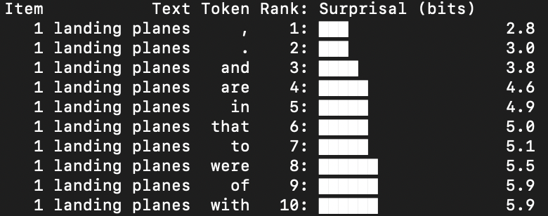
Beispiel: Wortabruf

Beispiel: Wortabruf
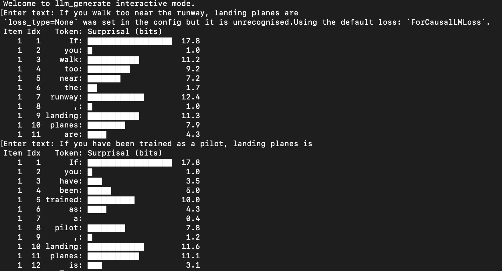
Beispiel: Wortabruf
- Herausforderung:
zehntausende Wörter im Kopf – trotzdem schnell abrufen - Rational Analysis erklärt:
- Frequenz-Effekt: Häufige Wörter sind schneller abrufbar als seltene
- Kontext-Effekt: Kontextuell passende Wörter sind leichter verfügbar
- Ergebnis:
Sprache läuft flüssig und effizient
Beispielphänomen: Garden-Path (Holzweg) Sätze
Psycholinguistische Methoden
- Urteile über
- Akzeptabilität
- Grammatikalität
- Wahrheitswerte
- Schlussfolgerungen
- ...
- Fortsetzungsauswahl
- Freie Produktion
- ...
- Event-related Potentials (ERP mittels EEG)
- MEG
- fMRI
- Eyetracking (Visual World, Reading)
- Self-paced reading
- A-Maze
- ...
ERPs

Eyetracking
Erwartung und Prädiktion in der Psycholinguistik
N400

(Kutas & Hillyard, 1980)
Surprisal theory
(Levy, 2008; Hale, 2001)

- Verabeitungsschwierigkeit (z.B. Lesezeit aber auch N400 amplitude) proportional zu Informationsgehalt, aka Surprisal (Smith & Levy, 2013)
Garden-Path Sätze in der Surprisal Theorie
Causal Bottleneck

(Mittlerweile anhand von Garden-Path-Effekten widerlegt)
...und in Large Language Models (LLM)
LLMs nutzen Transformer Architektur um nächstes Wort vorherzusagen


https://www.lingexp.uni-tuebingen.de/b1/Monstera/web/
Teil 3: Experiment zu erwartungswidrigen Fokuspartikeln
Einführung
- Fokuspartikeln:
A focus particle is a particle that accompanies an element that is focused and that expresses various meanings related to the focusing [😀] (Glottopedia)
Partikeln, die [...] bestimmte Elemente eines Satzes [hervorheben]. Zusammen mit deren [fokussierten] Bezugsausdruck bilden sie den Informationskern des Satzes. Weglassen [...] verändert nicht die grammatische Richtigkeit [...] aber die Bedeutung des Satzes. (Dimroth, 2004)
- Bekannte Gruppen: restriktive, additive und (hybride)
skalare Fokuspartikeln
allein, auch, auch nur, ausgerechnet, ausschließlich, bereits, besonders, bloß, einzig, eben, ebenfalls, erst, gar, genau, geschweige denn, gerade, gleich, gleichfalls, insbesondere, lediglich, (nicht) einmal, noch, nur, schon, selbst, sogar, vor allem, wenigstens, zumal, zumindest (König 1991)
- Restriktive Fokuspartikeln (z.B. nur, ausschließlich)
| Jörg | ||
| Nur | Fabian | hält einen Vortrag über Fokuspartikeln |
| Helga |
- Additive Fokuspartikeln (z.B. auch, ebenfalls)
| Emma | ||
| Auch | Mengjie | hält einen Vortrag über Fokuspartikeln |
| Fabian |
- Es gibt aber auch Fokuspartikeln, die sich nicht klar einer dieser beiden Gruppen zuordnen lassen (ausgerechnet, gerade, eben, genau)
Vorschlag
Erwartungswidrige Fokuspartikeln
(ausgerechnet, gerade, eben, genau)
„Die erwartungswidrigen Fokuspartikeln heben die Unwahrscheinlichkeit des Bezugsausdrucks in Relation zu allen möglichen Alternativen hervor, indem er als (sehr) unerwartet bestimmt wird.“
Experiment
Experimentelles Design
Kontext Typ I (medium expectancy)
Peter ist nicht gut in der Schule. Besonders Mathe fällt ihm schwer. Trotz ständiger Nachhilfe kommt er nicht mit den anderen mit. Letzte Woche haben die Schüler eine Matheprüfung geschrieben. In der heutigen Stunde wurden die Prüfungen dann endlich zurückgegeben.
Target-Satz
- Peter...
- Nur Peter...
- Ausgerechnet Peter...
Experimentelles Design
Kontext Typ II (high expectancy)
Peter ist in der 8. Klasse. Seit letzter Woche ist die Aufregung unter den Schülern groß, weil sie eine Matheprüfung geschrieben und seither gespannt auf die Ergebnisse gewartet haben. In der heutigen Stunde wurden die Prüfungen dann endlich zurückgegeben.
Target-Satz
- Peter...
- Nur Peter...
- Ausgerechnet Peter...
Hypothesen und Vorhersagen
- Restriktive und additive (RA) Fokuspartikeln folgen den Diskurserwartungen, wie bei Abwesenheit (OH) von Partikeln
- RA und OH verhalten sich ähnlich
- Erwartungswidrige (EW) Partikeln lizensieren Foretzungen, die an sich unerwartet sind
- EW verhalten sich anders als OH/RA und reagieren entgegengesetzt auf Manipulation der kontextuellen Erwartung
Teil 3: Ergebnisse
MA-Arbeit

Frühere Schüler*innenlabore
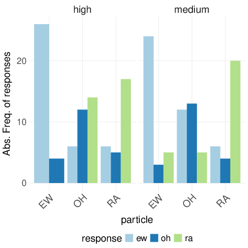
Heutiges Schüler*innenlabor
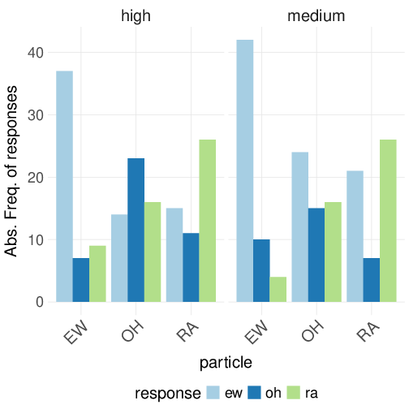
Teil 4: Simulation mit LLM
Ergebnis: Reliabilität
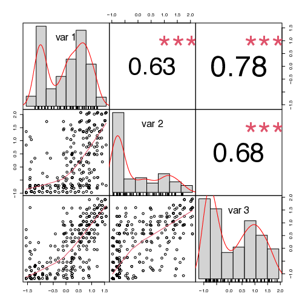
Ergebnis: Effekt
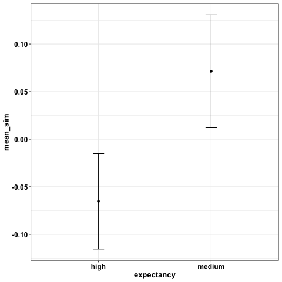
import numpy as np
import pandas as pd
import openai
from openai import OpenAI
import argparse
from tqdm import tqdm
# Secret file with API key (DO NOT commit this)
with open("../scripts/key.txt", "r") as f:
key = f.read()
openai.api_key = key
scenarios = pd.read_csv(
"Continuations.csv"#, nrows=3
).dropna()
print(scenarios.head())
client = OpenAI(api_key=key)
for i, row in tqdm(scenarios.iterrows()):
text1 = row.FortsetzungI
text2 = row.FortsetzungII
text3 = row.FortsetzungIII
text4 = row.FortsetzungIV
embedding1 = client.embeddings.create(input = [text1], model='text-embedding-3-large').data[0].embedding
embedding2 = client.embeddings.create(input = [text2], model='text-embedding-3-large').data[0].embedding
embedding3 = client.embeddings.create(input = [text3], model='text-embedding-3-large').data[0].embedding
embedding4 = client.embeddings.create(input = [text4], model='text-embedding-3-large').data[0].embedding
similarity12 = np.dot(embedding1, embedding2)
similarity13 = np.dot(embedding1, embedding3)
similarity14 = np.dot(embedding1, embedding4)
similarity23 = np.dot(embedding2, embedding3)
similarity24 = np.dot(embedding2, embedding4)
similarity34 = np.dot(embedding3, embedding4)
print("\n\n")
print(text1)
print(text2)
print(text3)
print(text4)
print(similarity12)
print(similarity12)
print(similarity13)
print(similarity23)
print(similarity24)
print(similarity34)
scenarios.loc[i, "emb1"] = str(embedding1)
scenarios.loc[i, "emb2"] = str(embedding2)
scenarios.loc[i, "emb3"] = str(embedding3)
scenarios.loc[i, "emb4"] = str(embedding4)
scenarios.loc[i, "sim12"] = str(similarity12)
scenarios.loc[i, "sim13"] = str(similarity13)
scenarios.loc[i, "sim14"] = str(similarity14)
scenarios.loc[i, "sim23"] = str(similarity23)
scenarios.loc[i, "sim24"] = str(similarity24)
scenarios.loc[i, "sim34"] = str(similarity34)
scenarios.to_csv("sims.csv", index=False)
(Aus Seminar mit Studierenden der MA-Profillinie Digital Humanities)
Ergebnis: Reliabilität
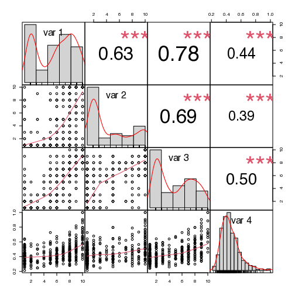
Ergebnis: Effekt
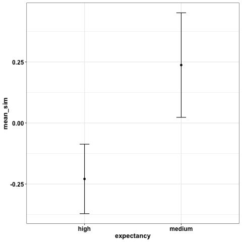
Analyse eines vollständigen maschinellen Datensatzes
Wir haben maschinelle Produktionen erzeugt und uns gefragt, wie ähnlich sich diese sind.
Paarweise Ähnlichkeiten zwischen Bedingungen
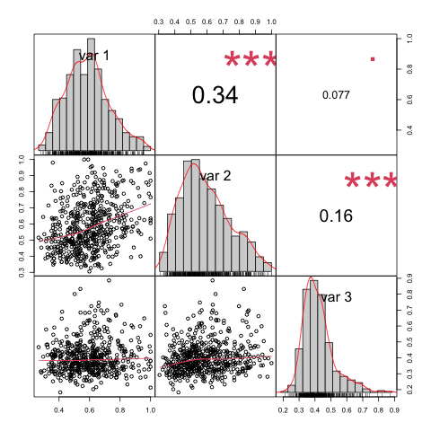
Starke Korrelation zwischen GPT 3.5, GPT 4 und menschlichen Produktionen
Mensch-Maschine Quiz des Sonderforschungsbereichs zu sprachlicher Kreativität in Bielefeld
Sonderforschungsbereich zu Common Ground in Tübingen